Due Friday, January 14 at 10:30 am
- Submissions received by the due date receive a small on-time bonus.
- All students are granted a pre-approved extension or "grace period" of 24 hours after the due date. Late submissions are accepted during the grace period with no penalty.
- The grace period expires Sat, Jan 15 at 10:30 am, after which we cannot accept further late submissions.
- All due dates and submission times are expressed in Pacific time.
This assignment must be completed individually. Working in groups is not permitted.
Here it is – the first programming assignment of the quarter! This assignment is designed to get you comfortable designing and building software in C++. It consists of five problems that collectively play around with control structures, string processing, recursion, and problem decomposition in C++. By the time you've completed this assignment, you'll be a lot more comfortable working in C++ and will be ready to start building larger projects.
This assignment consists of five parts, of which four require writing code. This will be a lot to do if you start this assignment the night before it’s due, but if you make slow and steady progress on this assignment each day you should be in great shape. Here’s our recommended timetable:
-
Aim to complete Stack Overflows the day this assignment is released. You don’t need to write any code for it; it’s just about working the debugger, something you practiced in Assignment Zero.
-
Aim to complete the three recursion problems within five days of this assignment being released. We recommend that you spend a day each on Only Connect, Playing Fair, and Sandpiles, leaving the rest as buffer time. Recursion as a concept can take a bit of time to adjust to, and that’s perfectly normal. Allocating some extra buffer time here will give you a chance to tinker around and ask for help if you need it.
-
Aim to complete Plotter within seven days of this assignment being released. This part of the assignment doesn’t involve recursion and is more about learning to break down larger problems into smaller pieces and getting comfortable in C++.
Assignment Logistics
Starter Files
We provide a ZIP of the starter project. Download the zip, extract the files, and double-click the .pro file to open the project in Qt Creator.
Resources
Feel free to check out our Python-to-C++ guide if you're moving from Python to C++. Also, check out our style guide, guide to testing, and debugging guide.
Getting Help
Keep an eye on the Ed forum for an announcement of the Assignment 1 YEAH (YEAH = Your Early Assignment Help) group session where our veteran section leaders will answer your questions and share pro tips. We know it can be daunting to sit down and break the barrier of starting on a substantial programming assignment – come to YEAH for advice and confidence to get you on your way!
We also here to help if you get run into issues along the way! The Ed forum is open 24/7 for general discussion about the assignment, lecture topics, the C++ language, using Qt, and more. Always start by searching first to see if your question has already been asked and answered before making a new post.
To troubleshoot a problem with your specific code, your best bet is to bring it to the LaIR helper hours or office hours.
Part One: Stack Overflows
Whenever a program calls a function, the computer sets aside memory called a stack frame for that function call in a region called the call stack. Whenever a function is called, it creates a new stack frame, and whenever a function returns the space for that stack frame is recycled.
As you saw on Wednesday, whenever a recursive function makes a recursive call, it creates a new stack frame, which in turn might make more stack frames, which in turn might make even more stack frames, etc. For example, when we computed factorial(5), we ended up creating a net of six stack frames: one for each of factorial(5), factorial(4), factorial(3), factorial(2), factorial(1), and factorial(0). They were automatically cleaned up as soon as those functions returned.
But what would happen if you called factorial on a very large number, say, factorial(7897987)? This would create a lot of stack frames; specifically, it will make 7,897,988 of them (one for factorial(7987987), one for factorial(7987986), …, and one for factorial(0)). This is such a large number of stack frames that the call stack might not have space to store them. When too many stack frames need to be created at the same time, the result is a stack overflow and the program will crash.
In the case of factorial(7987987), a stack overflow occurs because we need a large but finite number of stack frames. In other cases, stack overflows arise due to programming errors. For example, consider the following (buggy!) implementation of the digitalRootOf function from Friday’s lecture:
/* This code is incorrect! Do not use it as a reference. */
int digitalRootOf(int n) {
return digitalRootOf(sumOfDigitsOf(n));
}
Let’s imagine that you try calling digitalRootOf(7897987). The initial stack frame looks like this:
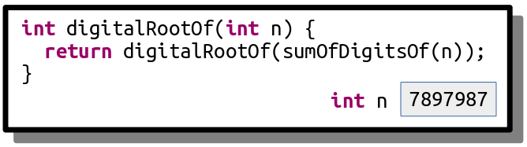
This stack frame calls digitalRootOf(sumOfDigitsOf(7897987)). The sum of the digits in the number is 7 + 8 + 9 + 7 + 9 + 8 + 7 = 55, so this fires off a call to digitalRootOf(55), as shown here:
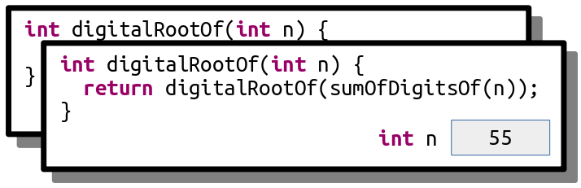
This now calls digitalRootOf(sumOfDigitsOf(55)), which ends up calling digitalRootOf(10):
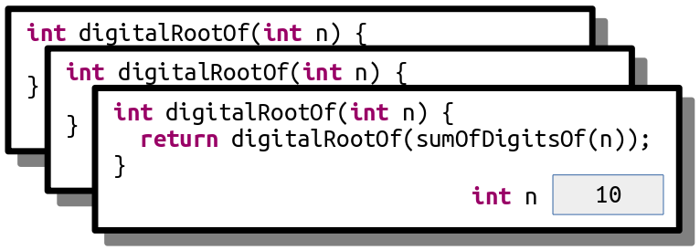
This now calls digitalRootOf(sumOfDigitsOf(10)), which ends up calling digitalRootOf(1):
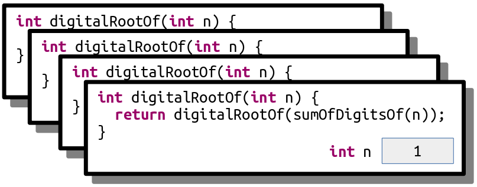
This now calls digitalRootOf(sumOfDigitsOf(1)), which ends up calling digitalRootOf(1) again, as shown here:
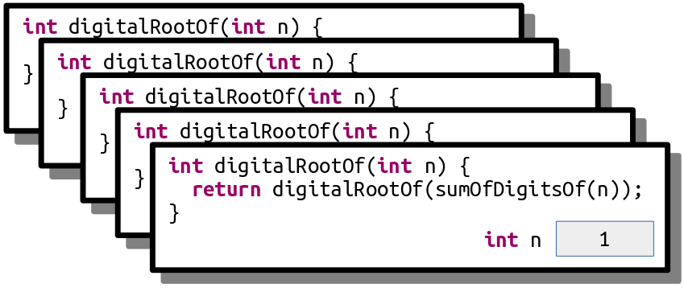
This call makes yet another call to digitalRootOf(1) for the same reason:
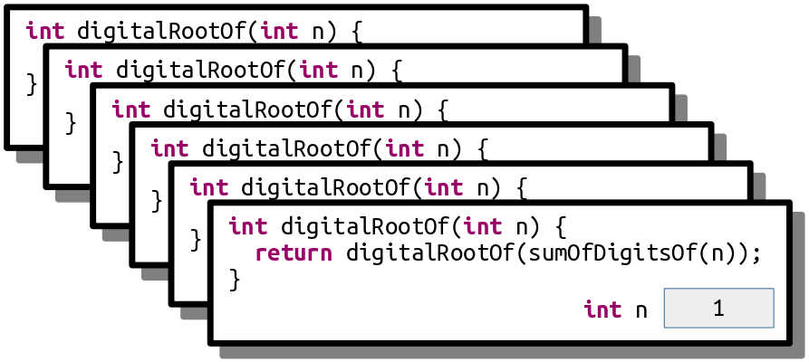
And that call makes yet another call to digitalRootOf(1):
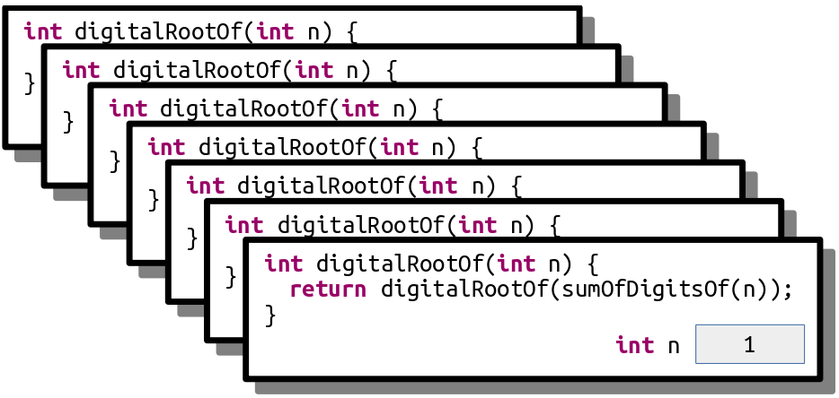
As you can see, this recursion is off to the races. It’s like an infinite loop, but with function calls. This code will trigger a stack overflow because at some point it will exhaust the memory in the call stack.
Another place you’ll see stack overflows is when you have a recursive function that, for some reason, misses or skips over its base case. For example, let’s suppose you want to write a function isEven that takes as input a number n and returns whether it’s an even number. You note that 0 is even (trust us, it is; take CS103 for details!) and, more generally, a number n is even precisely if n – 2 is even. For example, 2 is even because 2 – 2 = 0 is even, 4 is even because 4 – 2 = 2 is even, and 6 is even because 6 – 2 = 4 is even, etc. Based on this (correct) insight, you decide to write this (incorrect) recursive function:
/* This code is incorrect! Do not use it as a reference. */
bool isEven(int n) {
if (n == 0) {
return true;
} else {
return isEven(n - 2);
}
}
Now, what happens if you call isEven(5)? This initially looks like this:
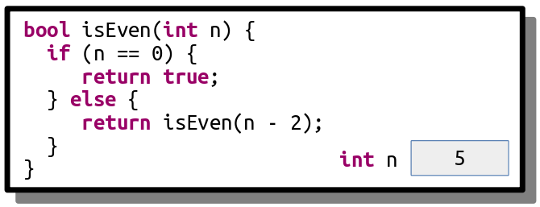
This call will call isEven(3), as shown here:
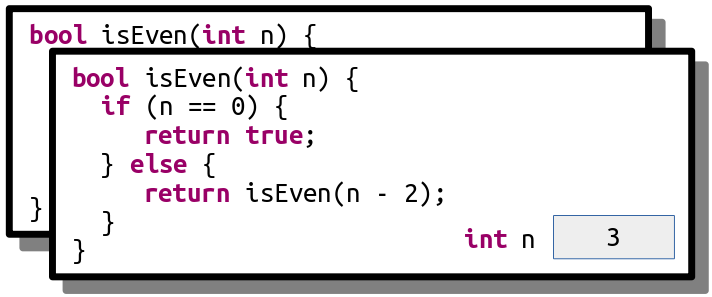
And that call then calls isEven(1):
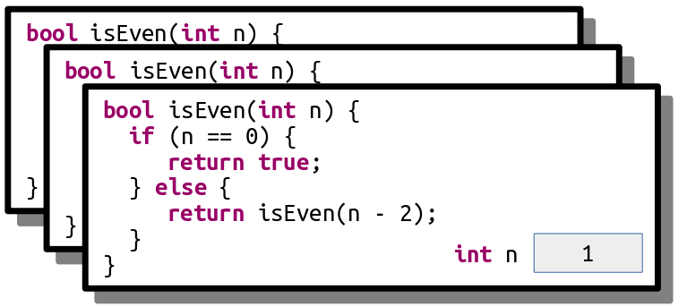
And here’s where things go wrong. This function now calls isEven(-1), skipping over the base case:
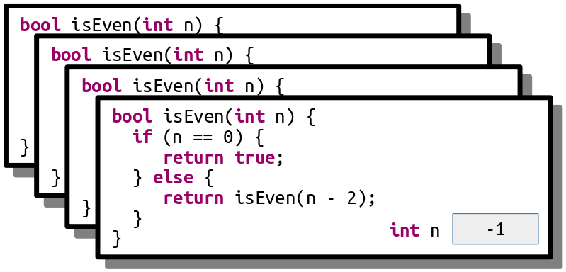
This call then calls isEven(-3):
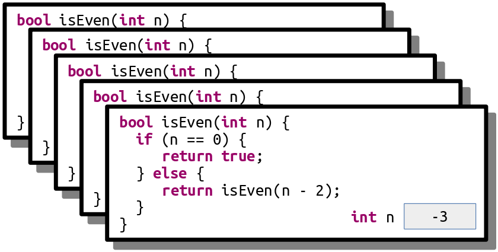
And we’re off to the Stack Overflow Races – n will keep getting more negative until we’re out of space.
Step One: See a Stack Overflow
There are two different ways that you can run a C++ program through Qt Creator. The first is to run the program normally, which you can do by clicking the large green triangle "run" button. The second is to run the program with the debugger engaged, which you saw how to do in Assignment 0. The behavior of a program that triggers a stack overflow is different based on whether it's running with the debugger on or off.
To see this, run the provided starter files without the debugger engaged (that is, with the green triangle run button). Click the "Stack Overflows" option. You'll see a message and a button at the bottom of the window that will trigger a stack overflow. Click that button and watch what happens. This is what it looks like when a C++ program crashes. What you see will depend on what operating system you're using. Write down a description of what you saw happen in the file comments of StackOverflow.cpp, up at the top of the file. Now, if you see similar behavior in the future, you'll be able to say "oh yeah, that probably means my program crashed."
Next, run the program again, but this time with the debugger turned on. Follow the same steps as above to trigger the stack overflow. This time, you should see the debugger pop up and point at a line in the program where the stack overflow occurred. You'll also see the call stack, which should be filled with lots and lots of calls to the same function. Now that you've got the debugger engaged, you can investigate which function triggered the stack overflow and, ideally, to work out what went wrong. You don't need to write anything down just yet. For now, hit the red "stop" button to close the program.
Going forward, as you're writing your first recursive functions, keep what you just saw in mind. If you see something that looks like your program crashed with a stack overflow, turn on the debugger and run it again. You'll then be taken to the exact spot where the stack overflow occurred, and from there you can walk the call stack to see what's up. Do you see multiple calls to a recursive function with the same parameters? Or a sequence of negative values getting more negative? That might indicate what's going on.
Step Two: Trace a Stack Overflow
In this part of the assignment, we’ve included a recursive function that looks like this:
void triggerStackOverflow(int index) {
triggerStackOverflow(kGotoTable[index]);
}
Here, kGotoTable is a giant (1024-element) array of the numbers 0 through 1023 that have been randomly permuted. This function looks up its argument in the table, then makes a recursive call using that argument. As a result, the series of recursive calls made is extremely hard to predict by hand, and since the recursion never stops (do you see why?) this code will always trigger a stack overflow.
Our starter code includes the option to call this function passing in 137 as an initial value. Run the provided starter code in debug mode (you learned how to do that in Assignment 0!) and trigger the stack overflow. You’ll get an error message that depends on your OS (it could be something like “segmentation fault,” “access violation,” “stack overflow,” etc.) and the debugger should pop up. Walk up and down the call stack and inspect the sequence of values passed in as parameters to triggerStackOverflow.
We’ve specifically crafted the numbers in kGotoTable so that the calls in triggerStackOverflow form a cycle. Specifically, triggerStackOverflow(137) calls triggerStackOverflow(x) for some number x, and that calls triggerStackOverflow(y) for some number y, and that calls triggerStackOverflow(z) for some number z, etc. until eventually there’s some number w where triggerStackOverflow(w) calls triggerStackOverflow(137), starting the cycle anew.
Your task in this part of the assignment is to tell us the sequence of the numbers in the cycle. For example, if the sequence was
triggerStackOverflow(137)callstriggerStackOverflow(106), which callstriggerStackOverflow(271), which callstriggerStackOverflow(137), which callstriggerStackOverflow(106), which callstriggerStackOverflow(271), which callstriggerStackOverflow(137), which callstriggerStackOverflow(106), which calls
Then you would give us the cycle 137, 106, 271, 137.
Your Task
Below is a quick summary of the deliverables for this part of the assignment. See the above sections for more details.
-
Run the provided program without the debugger engaged and trigger a stack overflow using the menu. Update the file comments at the top of
StackOverflow.cppto describe what you saw happen when the stack overflow occurred. -
Run the provided program a second time with the debugger engaged and trigger a stack overflow using the menu. Walk up and down the call stack in the debugger, inspecting the arguments to the recursive call, to determine what the cycle of recursive calls is. Then, update the file comments at the top of
StackOverflow.cppto list the cycle of recursive calls.
Notes
Some notes on this part of the assignment:
-
The topmost entry on the call stack might be corrupted and either not show a value or show the wrong number. Don’t worry if that’s the case – just move down an entry in the stack.
-
Remember that if function A calls function B, then function B will appear higher on the call stack than function A because function B was called more recently than function A. Make sure you don’t report the cycle in reverse order!
-
When you run the program in Debug mode, Qt Creator will switch to Debug View, which has a bunch of windows and side panels to view information about the running program. That’s great when you’re debugging, and not so great when you’re just trying to write code. You can switch back to the regular code-writing view by clicking the “Edit” button in the left side pane.
-
You shouldn’t need to edit
StackOverflow.hin the course of solving this problem.
Part Two: Only Connect
The last round of the British quiz show Only Connect consists of puzzles of the following form: can you identify these movie titles, given that all characters except consonants have been deleted?
BTYNDTHBSTMNCTCHMFYCNSRSMN
The first is "Beauty and th Beast," the second is "Moana," the third is "Catch Me If You Can," and we'll leave the last one as a mystery for you to work out if you're so inclined.
To form a puzzle string like this, you simply delete all characters from the original word or phrase except for consonants, then convert the remaining letters to ALL-CAPS.
Your task is to write a recursive function
string onlyConnectize(string phrase);
that takes as input a string, then transforms it into an Only Connect puzzle. For example:
-
onlyConnectize("Elena Kagan")returns"LNKGN", -
onlyConnectize("Antonin Scalia")returns"NTNNSCL", -
onlyConnectize("EE 364A")returns"", -
onlyConnectize("For sale: baby shoes, never worn.")returns"FRSLBBYSHSNVRWRN", -
onlyConnectize("I'm the bad guy. (Duh!)")returns"MTHBDGYDH", and -
onlyConnectize("Annie Mae, My Sea Anemone Enemy!")returns"NNMMYSNMNNMY".
Notice that the letter Y isn’t removed from these strings. While you could argue that Y counts as a vowel in English, the actual BBC show leaves the letter Y in.
The starter code that we’ve provided contains code to test your function on certain inputs. These tests check a few sample strings and are not designed to be comprehensive. In addition to implementing the onlyConnectize function, you will need to add in at least one new test of your own using the STUDENT_TEST macro. To do so, use this syntax:
STUDENT_TEST("description of the test") {
/* Put your testing code here. */
}
Take a look at the other tests provided to get a sense of how to write a test case. The EXPECT_EQUAL macro takes in two expressions. If those expressions are equal, great! Nothing happens. Otherwise, EXPECT reports an error. You can run the tests by choosing the “Run Tests” button from the demo app. You can read more about how these tests work through our Guide to Testing.
Be strategic about the tests you add. What are some tricky cases you might want to confirm work correctly? Are there any edge cases (small cases, unusual cases, etc.) that would be worth testing?
Once you have everything working, run our demo program to play around with your code interactively. Then, leave an Only Connect puzzle of your own choosing for your section leader! To do so, edit the file comments at the top of the file with the consonant string, along with a hint.
Your Task
To summarize, here’s what you need to do:
-
Implement the
onlyConnectizefunction inOnlyConnect.cpp. This function must be implemented recursively. It takes as input a string. The output should be that same string, in upper case, with all characters except consonants deleted. Feel free to write helper functions if you’d like. As you go, test your code by using the “Run Tests” button in the provided program. -
Add at least one test case using the
STUDENT_TESTmacro. Your test should go in the fileOnlyConnect.cpp, preferably with all the other test cases. For full credit, your test case should check some style of input that wasn’t previously addressed by the provided tests. -
Leave an Only Connect puzzle for your section leader in the comments at the top of the file.
As you’re writing up your solution to this problem, remember that coding style is important. We have a style guide available on the CS106B website. Take a few minutes to read over it, then review your code to make sure it conforms to those style expectations. In particular, make sure to indent your code! On Qt Creator, you can automatically indent your code by pressing Command-I or CTRL-I. We recommend that you indent early and indent often to make sure that your code is structured the way you think it is.
Notes
Some notes on this problem:
-
All C++ programs begin inside the
main()function, and we’ve already written this function for you in one of the starter files. You just need to implementonlyConnectizeand are not responsible for writingmain(). (In fact, if you did try to write your ownmain()function here, you’d get an error because there would be two different versions ofmain()and C++ wouldn’t know which one to pick!) -
If one of the test cases crashes with a stack overflow, it will cause the entire program to crash. But not to worry! You've seen how to recognize stack overflows in the first part of this assignment. If you think you're seeing a stack overflow, run the program in debug mode, find where the stack overflow is, and explore the call stack and local variables window to isolate what's going on.
-
Your solution must be recursive. You may not use loops (
while,for,do…while, orgoto). -
Make sure that you’re always returning a value from your recursive function. It’s easy to accidentally forget to do this when you’re getting started with recursion.
-
You can use
toUpperCasefrom the"strlib.h"header to convert a single character to upper case. It takes in achar, then returns the upper-case version of that letter. If you calltoUpperCaseon a non-letter character like'$'or'*', it will return the original character unmodified. -
The
isalphafunction from the<cctype>header takes in a character and returns whether it’s a letter. There is no library function that checks if a letter is a consonant or vowel, though. -
You should delete all characters that aren't consonants, including spaces, numbers, digits, etc.
-
If you’re coming from Python, note that C++ doesn’t have an in operator like the one in Python and that the and and or operators are denoted by
&&and||, respectively. Check out the guide to transitioning from Python to C++ on the course website for more information. -
Remember that C++ treats individual characters differently than strings. Individual characters have type
char. To talk about a specific single character, you must use single quotes (e.g.'a'rather than"a"). Strings have typestring. To talk about a specific string, you must use doublequotes (e.g."hello"rather than'hello'). -
You can convert a
charto astringby using thecharToStringfunction from"strlib.h". -
You are welcome to add your own helper functions when solving this problem. Those functions must obey the same rules as the main function (e.g. no loops).
-
Just to make sure you didn’t miss this, we are not treating the letter
yas a vowel. This is in line with what the actual BBC show does. -
You shouldn’t need to edit
OnlyConnect.hin the course of solving this problem.
Part Three: Playing Fair
Consider the following scenarios:
-
Ten people want to play pick-up basketball. They select one person to captain team A and one to captain team B. The two captains then take turns choosing players for their team. One option would be to alternate between captains A and B, but that would give the team that picked first a noticeable advantage over the other. In what order should the captains pick players?
-
The World Chess Championship is a multi-game chess match held every two years between the reigning world champion and a challenger. In chess, white has a slight advantage over black, so both players should have an equal number of games as white and as black. However, if one player gets too many games as white early on, they might accumulate a score advantage early on that puts pressure on the other player. In what order should the players play as white and black?
-
In old-school NFL rules, if a postseason football game went to overtime, one team would get possession of the ball and be given a chance to score. If they scored, they’d instantly win the game. If they didn’t, the other team would get possession and a chance to score. If they didn’t, the first team would get another try, etc. This gives an advantage to whoever gets possession first. What’s a better way to decide which team gets a chance to score to make this as fair as possible?
These scenarios all have a core setup in common. There are two parties (we’ll call them A and B) who take turns at an activity that confers an advantage to whoever performs it first. The goal is to determine the order in which A and B should perform that activity so as to make it as close to fair as possible.
There’s a clever recursive technique for addressing this problem that keeps the advantage of going first to a minimum. We’re going to consider two kinds of sequences: A-sequences and B-sequences, which each give a slight advantage to players A and B, respectively.
There are different A-sequences and B-sequences of different lengths. Each sequence is given a number called its order. The higher the order of the sequence, the more games are played. For example, here are the A and B sequences of orders 0, 1, 2, 3, and 4:
| Order 0 | Order 1 | Order 2 | Order 3 | Order 4 | |
|---|---|---|---|---|---|
| A-sequence | A | AB | ABBA | ABBABAAB | ABBABAABBAABABBA |
| B-sequence | B | BA | BAAB | BAABABBA | BAABABBAABBABAAB |
We can interpret these sequences as instructions of who gets to play when. For example, the A-sequence of order 2, ABBA, can be thought of as saying “A plays first, then B, then B again, then A again.” There’s a slight advantage to A going first, but it’s mitigated because B gets two turns in a row. The B-sequence of order three, BAABABBA, means “B takes a turn, then A, then A again, then B, then A, then B, then B again, then A.” If you think about what this looks like in practice, it means that B has a little advantage from going first, but the other alternations ensure that A gets to recoup some of that disadvantage later on.
Right now these sequences might look mysterious, but there’s a nice pattern. Take the A-sequence of order 4, ABBABAABBAABABBA, and split it in half down the middle, as shown to the right. That gives back the two sequences ABBABAAB and BAABABBA. If we look in the table shown above, we can see that this first sequence is the A-sequence of order 3, and the second sequence is the B-sequence of order 3. Interesting!
More generally, the pattern looks like this: if you take an A-sequence of order n (where n > 0) and split it in half, you get back an A-sequence of order n – 1 followed by a B-sequence of order n – 1. Similarly, if you take a B-sequence of order n (with n > 0) and split it in half, you get a B-sequence of order n – 1 followed by an A-sequence of order n – 1. This process stops when you need to form the A-sequence or B-sequence of order 0, which are just A and B, respectively.
Using these observations, implement a pair of functions
string aSequenceOfOrder(int n);
string bSequenceOfOrder(int n);
that take as input a number n ≥ 0, then return the A-sequence and B-sequence of order n, respectively. As with the Only Connect problem, these functions must be recursive and must not use loops.
If someone calls either function passing in a negative value of n, you should use the error function from the header "error.h" to report an error. You call this function by writing
error("a string containing your error message")
The error function immediately jumps out of the function to say that something terrible has happened. You can think of it as an "emergency abort" that will leave the current function in a panic. In that sense, it's kind of like a return statement - it means the function has finished running.
We’ve included some tests you can use to check your solution, but they aren’t exhaustive. You’ll need to add at least one custom test case, and ideally more. You might notice that we’ve used the EXPECT_ERROR macro in one of our test cases. This macro evaluates the expression and sees whether it calls the error() function to report an error. If so, great! It makes a note that an error was indeed generated. If not, it causes the test to fail and reports that the expression failed to trigger an error.
The starter code contains a demo of another property of these sequences. Imagine you’re in an open field. You then read the characters of an A-sequence from left to right. Whenever you read an A, you take a step forward, then rotate 60°. Every time you read a B, you turn around without moving. Repeating this process gives an intricate and complex result. Once your code is working, run our demo app to see what it is! The slider at the bottom controls the order of the sequence.
Your Task
To summarize, here’s what you need to do:
-
Implement the
aSequenceOfOrderandbSequenceOfOrderfunctions in the filePlayingFair.cpp. These functions should return an A-sequence and B-sequence of order n, respectively. These functions must be implemented recursively. If either function receives a negative number as an input, they should use theerror()function to report an error. As you go, test your code by using the “Run Tests” button in the provided program. -
Add at least one test case using the
STUDENT_TESTmacro. Your test should go in the filePlayingFair.cpp, preferably with all the other test cases. For full credit, your test case should try to check some case that wasn’t previously addressed by the bundled tests. -
Once everything works, click the “Playing Fair” button in the demo program to see a cool visualization of the sequences you’ve generated.
Notes
Some notes on this problem:
-
As with most recursive functions, you probably shouldn’t need to write much total code here. If you’ve written thirty or more lines of code and are struggling to get things working, you may be missing a easier solution route and might want to check in with your section leader for advice.
-
If your code triggers a stack overflow, even in a test case, it will cause the entire program to crash. In the first part of this assignment you learned what a stack overflow looks like, so if you see something that resembles a stack overflow, run your program in debug mode so that you can see where the crash is occurring and try to sort out why it's happening.
-
An A-sequence of order n has length 2n , which means that the lengths of these sequences grow extremely rapidly as a function of n. For reference, an order-30 A-sequence will be over a billion characters long, and an order-300 A-sequence has more characters than there are atoms in the observable universe. Don’t worry about generating sequences of those sorts of orders; stick with loworder sequences, say, with n ≤ 20.
-
If your code isn’t working, step through it in the debugger! You saw how to step through recursive code in Part One of this assignment and in Assignment Zero.
-
Testing is key here. The tests we’ve provided aren’t sufficient to cover all the cases that might come up. You’re required to add at least one test case, and really do take that seriously. If you’re trying to test something recursive, what sorts of cases might be good to check?
-
You shouldn’t need to edit
PlayingFair.hin the course of solving this problem.
Part Four: Sandpiles
One of the most beautiful ideas in computer science is that simple rules give rise to complex behavior. You can have straightforward principles governing a system, yet discover that repeated applications of those rules gives intricate and surprising patterns. The best way to appreciate this is to see it for yourself.
This problem concerns a mathematical model of a sandpile called the Bak-Tang-Wiesenfeld model after the three physicists who first devised it. They modeled a pile of sand as follows. We begin with a two-dimensional grid subdivided into units called cells. Each cell is initially empty. We then pick a cell and start dropping grains of sand into it. Each cell is allowed to hold between 0 and 3 grains of sand. So, for example, if we had a 5 × 5 grid and started dropping sand into the center square, the first few steps would look like this:
Now, what happens when we drop a fourth grain of sand in the center? As we mentioned earlier, each cell can hold between 0 and 3 grains of sand, so we can’t have four grains of sand there. In this case, the cell topples, sending one grain of sand to each of its four neighbors in the cardinal directions (up, down, left, and right), ending up empty. This is shown here:
That might be the end of the story, or it might just be the beginning. Imagine, for example, that there are two adjacent cells, each of which contains three grains of sand. What happens when a grain of sand is dropped into one of those full cells? That initial cell topples, sending one grain of sand in each direction. One of those grains lands inside another cell holding three grains, boosting it up to four grains, causing that cell to topple. This is illustrated below:
![In this figure, we see a 5x5 grid. To describe it, let's use a coordinate system where (1, 1) is the top-left corner, (1, 2) is the square to the right of the top-left square, (2, 1) is the square just below the top-left corner, and (5, 5) is the square in the bottom-right corner. We begin with all cells empty except for (3, 3) and (3, 4), which have 3 sand grains each. We drop a sand grain into square (3, 3). Now, square (3, 3) has four sand grains and square (3, 4) has three. Square (3, 3) topples, sending one sand grain to each neighboring location. Now, squares (2, 3), (3, 2), and (4, 3) have one grain of sand, and square (3, 4) has four (three from before, plus one more). Square (3, 4) now topples, sending one sand grain in each direction. The net result is that squares (2, 3), (2, 4), (3, 2), (3, 3), (3, 5), (4, 3), and (4, 4) have one sand grain each.](sp/sandpiles-3.png)
A single grain of sand can cause a large cascade. For example, here’s what happens if five full cells in a plus shape are disturbed by one sand grain:
![We follow the same coordinate system as before. Initially, squares (2, 3), (3, 2), (3, 3), (3, 4), and (4, 3) have three sand grains each. We drop a sand grain into the center. Now, squares (2, 3), (3, 2), (3, 4), and (4, 3) have three sand grains each, and square (3, 3) has four sand grains. Square (3, 3) topples. Now, squares (2, 3), (3, 2), (3, 4), and (4, 3) have four sand grains each. They all topple. Now, squares (1, 3), (3, 1), (3, 5), and (5, 3) have one sand grain in them; squares (2, 2), (2, 4), (4, 2), and (4, 4) have two sand grains in them; and square (3, 3) has four sand grains in it. Square (3, 3) topples. In the final state, squares (1, 3), (2, 3), (3, 1), (3, 2), (3, 4), (3, 5), (4, 3), and (5, 3) have on grain of sand each and squares (2, 2), (2, 4), (4, 2), and (4, 4) have two grains of sand each.](sp/sandpiles-4.png)
There’s one additional case to consider, and that’s what happens at the border of the world. We can think of the cells in our grid as the surface of a table. If sand were to fall outside of the the boundaries of the world, it just falls off the table and is never seen again. For example, here’s what happens if a cell in the corner were to topple:
![We follow the same coordinate system as before. Initially, squares (1, 1), (1, 2), and (2, 1) have three grains of sand each. We drop a grain of sand into square (1, 1). Now, square (1, 1) has four grains of sand and squares (1, 2) and (2, 1) have three grains of sand each. Square (1, 1) topples. Now, squares (2, 1) and (1, 2) have four grains of sand each. They topple. The result is that squares (1, 3) and (3, 1) have one grain of sand in them and squares (1, 1) and (2, 2) have two grains of sand each.](sp/sandpiles-5.png)
If you start with an empty world and repeatedly drop grains of sand into the center square, the resulting sand patterns are extremelysurprising. But that’s something that you’ll need to see for yourself. 😃
Before moving on, we recommend that you take a few minutes to answer the following question: what will the world below look like if we drop a single grain of sand onto the center square? The chain reaction here is quite interesting – work this out with a pencil and paper! (You don’t need to submit your answer to this question; it’s purely for your own edification.)
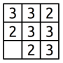
Your job is to implement a recursive function
void dropSandOn(Grid<int>& world, int row, int col);
that takes as input a row and a column index, along with a reference to Grid<int> representing the number of grains of sand in each cell (more on this later on), then adds a single grain of sand to the specified location. As a reminder, here’s what happens when you drop sand on a cell:
-
If the cell ends up with three or fewer grains of sand in it, you’re done.
-
Otherwise, empty that cell, then drop one grain of sand on each of the four neighbors.
You might have noticed that the first argument is a Grid<int>, a type we haven’t encountered before. This is a type representing a fixed-size, two-dimensional grid of integers, like the grids that we showed on the previous pages. You can access and manipulate the individual cells using statements like these:
world[row][col] += 137;
if (world[row][col] == 0) { ... }
Row and column indices start at zero, and row 0, column 0 is in the upper-left corner of the screen. The rows increase from top to bottom and columns increase from left to right.
You may be given coordinates in dropSandOn that are outside the boundaries of the grid, either because whoever is giving you the coordinates just wants to drop sand on the floor or because something toppled off the edge. If that happens, dropSandOn should have no effect and should leave the grid unmodified. You can test whether a coordinate is in bound by using the grid’s inBounds() member function:
if (world.inBounds(row, col)) { ... }
Make sure not to read or write to a grid in an out-of-bounds location. Doing so will cause the program to crash with an error message.
Your Task
To summarize, here’s what you’re expected to do:
-
Implement the
dropSandOnfunction inSandpiles.cpp. This function should simulate dropping a grain of sand onto the world, toppling as necessary. This function must be implemented recursively. As you go, test your code by using the “Run Tests” button in the provided program. -
Add at least one test case using the
STUDENT_TESTmacro. Your test should go in the fileSandpiles.cpp, preferably with all the other test cases. For full credit, your test case should try to check some case that wasn’t previously addressed by the bundled tests. -
Once everything is working, click the “Sandpiles” option in the sample program and take a look at the beautiful patterns that result. Isn’t that something? It’s amazing that rules that push sand grains in the four cardinal directions give rise to circles with nested triangular structures.
Notes
Some notes on this problem:
-
As before, your solution should be purely recursive and should not involve any loops.
-
We advise against writing any helper functions here. It’s actually easiest to write this as a single function that drops a grain of sand and handles toppling rather than splitting those bits apart.
-
When a cell topples, make sure to empty that cell out before you start dropping grains of sand on other squares. Otherwise, weird things can happen when sand falls back into that cell.
-
It actually doesn’t matter what order you visit the neighbors of a toppling cell when that cell topples. The result is always the same. (This isn’t supposed to be obvious, by the way; it’s something that requires a creative mathematical proof.)
-
You shouldn’t need to edit
Sandpiles.hin the course of solving this problem. -
The world parameter is passed by reference (that’s what the & after the type name means). For more on reference parameters, read Chapter 2.5 of the textbook.
As before, you are required to also add in some of your own test cases. Take this seriously! It can be hard to tell whether you’ve gotten your solution working purely by looking at the output because the system evolves in such amazing and complex ways. Writing your own targeted, focused tests is a great way to make sure that what you think is going to happen matches what actually happens.
All the code you need to write for this part of the assignment goes in the Sandpiles.cpp file.
Part Five: Plotter
Before going over the code specifics, we should start off by noting that
☞ you don’t need to use recursion for this part of the assignment, ☜
since we expect that the previous four problems will have gotten you used to thinking recursively.
What is a Plotter?
A plotter is a physical device that makes two-dimensional images. Intuitively, you can think of a plotter as a device that holds a sheet of paper and then moves a pen around that paper using a robot arm. You issue commands to the plotter to move the pen around, and as the pen drags around the paper it draws an image. The pen moves around a standard Cartesian coordinate system, where (0, 0) is the origin. The x and y coordinates range between -1 and +1 (inclusive), so the coordinate (+1, +1) is in the upper-right corner of the paper and (-1, -1) is the lower-left corner of the paper. Initially, the pen begins at the origin, which is at the center of the page.
The plotter’s pen can be in one of two different states: up (raised above the page) or down (pressed onto the page). If the pen is up, then as the plotter moves the pen nothing will be drawn because the pen isn’t in contact with the page. If the pen is down, then as the plotter moves the pen the pen will draw on the paper. Initially, the pen begins up.
Some fancier plotting machines will have different inks they can put into the pen, or different tips they can use to make the pen draw narrower or wider lines. Initially, the pen is black and has width 1.
To get the plotter to draw an image, you give the plotter a script that tells it how to move the pen. Here’s an example of a simple script you could give to a plotter, along with the output.
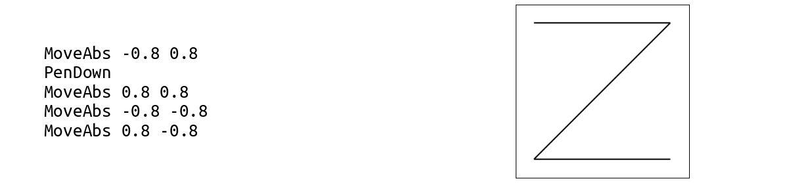
Each line of the script represents a single command to the plotter. The first word on each line is the command, and, if there are any arguments needed for that command, they’re listed afterward, separated by spaces. Here’s how this script is interpreted:
-
MoveAbs -0.8 0.8: The MoveAbs command means “move, absolute” and tells the plotter to move the pen to the given position. The next two arguments are the x and y coordinates to move to, so this places the pen at position (-0.8, 0.8). At this point, nothing will have been drawn because the pen hasn’t yet been lowered onto the page. -
PenDown: As the name suggests, this lowers the pen onto the page. -
MoveAbs 0.8 0.8: This means “move the pen to position (0.8, 0.8),” near the upper-right corner of the paper. The pen then moves there, drawing a line from its previous location of (-0.8, 0.8) to its new position of (0.8, 0.8). This is the horizontal line you see on top of the image. -
MoveAbs -0.8 -0.8: This moves the pen to near the lower-left corner of the paper, drawing a diagonal line from the upper-right corner to the lower-left corner of the image. -
MoveAbs 0.8 -0.8: Move the pen near the lower-right corner, drawing the bottom line in the image.
Here’s a different script that draws an exclamation point – or at least, a rough approximation of one:
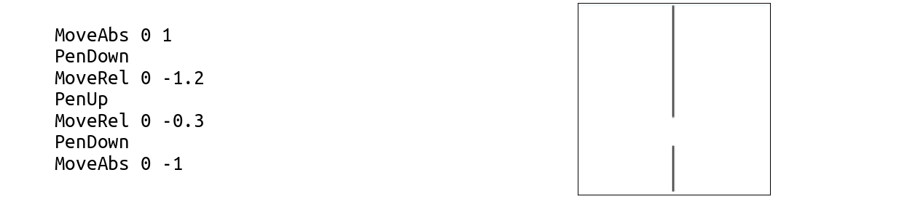
Let’s trace through this script one line at a time.
-
MoveAbs 0 1: Moves the pen to (0, 1), the top-center of the paper, without drawing any lines because the pen begins up. -
PenDown: Lowers the pen so that we’re ready to draw. -
MoveRel 0 -1.2: TheMoveRelcommand is short for “move, relative.” LikeMoveAbs, this moves the pen. However, whereas MoveAbs x y means “move the pen to position (x, y),” the commandMoveReldx dy means “move the pen dx units over horizontally and dy units vertically.” In our case,MoveRel 0 -1.2means “add 0 to the x position and -1.2 to the y position,” taking our pen to position (0, -0.2) and drawing the top line. -
PenUp: Picks the pen up. This means that we can reposition the pen without drawing anything. -
MoveRel 0 -0.3: This adds 0 to our x coordinate and -0.3 to our y coordinate. Our pen is now in position (0, -0.5). -
PenDown: Lower the pen for drawing. -
MoveAbs 0 -1: Moves the pen to (0, -1), drawing the bottom stroke and completing the image.
Our Provided Code
Now that you’ve gotten a better handle on what a plotter script looks like, let’s talk about what you need to do. We’ve provided you a working implementation of the following function:
void drawLine(double x0, double y0
double x1, double y1,
PenStyle info);
This function takes as input two x, y coordinates and draws a line between them. The last argument to this function is a PenStyle. What exactly is this? In the Plotter.h header file (look at Headers/src/Plotter.h), you'll see that it's defined like this:
struct PenStyle {
double width;
std::string color;
};
This is a structure, a type representing a bunch of different objects all packaged together as one. This structure type groups a doublenamed width and a string named color. The name PenStyle refers to a type, just like int or string. You can create variables of type PenStyle just as you can variables of any other type. For example, you could declare a variable of type PenStyle named style like this:
PenStyle style;
One you have a variable of type PenStyle, you can access the constituent elements of the struct by using the dot operator. For example, you can write code like this:
PenStyle style;
style.width = 2.71828;
style.color = "orange";
cout << style.color << endl;
As a note, just as regular double variables in C++ hold garbage values if you don't specify otherwise (see Chapter 1.5 for details), the double variables inside of a PenStyle will be set to garbage if you don't initialize them. Therefore, you might want to initialize your variables like this:
PenStyle style = { 1, "black" }; // Everything is initialized
Your Task
With that introduction to structs done, let's discuss what you need to do for this part of the assignment. Your task is to write a function
void runPlotterScript(istream& script);
that reads a plotter script and draws whatever image it contains by making appropriate calls to the drawLine function. The runPlotterScript function takes in an istream&, a reference to a stream. Streams are C++’s way of getting data from an external source (the keyboard, a file, the network, etc.), and in this case lets you read the contents of a file. As a reminder, you can read all the lines of a file, one at a time, using this syntax:
for (string line; getline(name-of-stream, line); ) {
/* ... do something with line ... */
}
Here’s a list of all the commands you might encounter:
-
PenDown: Lowers the pen. Has no effect if the pen is already down. -
PenUp: Raises the pen. Has no effect if the pen is already up. -
MoveAbs x y: Moves the pen to position (x,y), drawing a line if the pen was down. The values ofxandycan be any real numbers and might not fit within the bounds of the paper. If that’s the case, just move the pen off the page. OurdrawLinefunction is smart enough to only draw the part of the line that happens to be on the page. -
MoveRel dx dy: Addsdxto the pen’s x coordinate anddyto the pen’s y coordinate, drawing a line if the pen was down. As above, dx and dy can be any real numbers and might take the pen off the page. -
PenColor color: Changes the color of the pen to the string given bycolor. (ThedrawLinefunction supports basic color names likered,orange,yellow, etc., along with HTML colors like#c41e3a. If you haven’t seen HTML colors before, check out this link for some examples.) -
PenWidth width: Changes the width of the pen to the number given bywidth, which can be any positive real number. Larger widths draw thicker lines.
You can assume that all lines from the file are properly formatted, so you don’t have to worry about what to do if there are too many or too few arguments.
If you’re coming from Python, you’re probably used to splitting strings. The C++ string type doesn’t have any built-in functionality to split a string, but you can include the header file "strlib.h", which contains the stringSplit function. You can use stringSplit as follows:
Vector<string> name-of-result = stringSplit(string-to-split, what-to-split-on);
The type Vector<string> represents a list of strings and works similarly to Python lists. You can take a Vector<string> and use the .size() function to see how many pieces there are, and select individual items out of it using square brackets (e.g. the item at the first position would be selected with vec[0], the item at the second position would be selected with vec[1], etc.).
Depending on your approach, you might also want to check out the startsWith function from "strlib.h". We did not cover how to use the startsWith function in lecture. However, we've provided documentation on startsWith on the Stanford C++ Library Documentation page. Learning to read documentation is an important skill as a programmer, since you'll often find yourself working with new libraries!
To recap, here's what you need to do:
Implement the runPlotterScript function. It should do the following:
-
Initialize the plotter. The pen begins at position (0, 0) with in the “up” position, using the color
blackand having width one. -
Read each line of the input file. Based on the line, determine which of the
PenUp,PenDown,MoveAbs,MoveRel,PenWidth, andPenColorcommands to execute. Based on the command, make appropriate calls todrawLine, passing in the appropriate arguments.
Our provided starter files will let you select which plotter script you’d like to run, then run your runPlotterScript function on that script. Feel free to write your own plotter scripts to test out your plotter in a bunch of different cases.
Notes
Some notes on this problem:
-
Commands are case-insensitive. The commands
penup,PeNuP,PENUP, andPenUpare all equivalent. You may find thetoLowerCasefunction from"strlib.h"handy here. -
The only function we’re providing you is
drawLine. All the other steps here – keeping track of where the pen is, what color it is, interpreting what commands to execute, etc. – are for you to take care of. -
You will likely want to use the
stringToRealfunction from"strlib.h", which takes as input a string representation of a real number and returns that real number. (It’s like thefloat()command from Python and theDouble.parseDoublemethod from Java) -
You can assume each line of the input file is properly formatted: it’ll start with a command and have the appropriate number of arguments, each of which has the right type. You don’t need to handle the case where there are typos or errors in the file.
-
If you’re asked to move the pen out of the bounds of the paper (say, to position (-1, -2)), just move the pen there even though that’s not in bounds. The
drawLinefunction will only draw the portion of the line that’s visible within the bounds of the paper, so you don’t need to do any fancy math to determine which part of the line needs to be drawn. -
If you try drawing right on the border of the paper (say, drawing a line from (-1, -1) to (+1, -1)), then the line might not be fully visible. Think about what would happen if you tried this in the real world – if you take a felt marker and draw a line right on the border between the paper and the writing surface, only part of that line might show up.
-
You may find reference parameters helpful here. Check out Chapter 2.5 of the textbook for more information about reference parameters.
-
You shouldn’t need to edit
Plotter.hin the course of solving this problem. -
You might be tempted to simulate moving the pen up by changing the pen color to white so that, as the pen moves around, it doesn’t draw anything on the page. This, unfortunately, doesn’t work, because changing the pen color to white may draw unexpected white lines on the page as the pen moves. Instead, if the pen is up, just don’t call the
drawLinefunction when the pen moves. -
Feel free to write helper functions to split the work up into multiple smaller pieces.
You may have noticed that we didn’t bundle any test cases with this part of the assignment, and that’s because the plotter’s output is purely graphical. To test this part of the assignment, you’ll need to run the provided sample files and make sure the output matches what you expect. That might entail getting out a pencil and paper to draw out what you think you should see with those files. And feel free to create a couple of plot files of your own to test things out!
(Optional) Part Six: Extensions!
You are welcome to add extensions to your programs beyond what's required for the assignment, and if you do, we're happy to give extra credit! If you do, please submit two sets of source files – a set of originals meeting the specifications we've set, plus a set of modified files with whatever changes you'd like. We recommend doing that by downloading two versions of the starter files, one where you'll do the base assignment and one where you'll put your extensions.
Here are some ideas to help get you started:
-
Only Connect: The puzzles given in the show Only Connect are made even more difficult because the show’s creators don’t just delete non-consonants; they also insert spaces into the result that may or may not align with the original phrase. For example, the string “O say, can you see?” might be rendered as
"SYC NYS", giving the illusion that it’s only two words rather than the five from the original. Write a recursive function that inserts spaces in random places into your resulting string.Another option: find a data set online containing a bunch of related phrases (for example, a list of movies, or historical figures, or geographic locations) and try building this into a legit trivia game. We’re curious to see what you choose to do here!
-
Playing Fair: Once you have an A-sequence or B-sequence, you could ask exactly how fair it is under various assumptions. For example, in the NFL overtime example, what would happen if you knew that one team had a 15% chance of scoring on each possession and the other had a 13% chance? What’s the likelihood of each team winning as you take longer and longer sequences? Alternatively, suppose you have three people, A, B, and C, who need to choose players for three teams. Could you find a way to generalize these sequences to find fair systems for those scenarios? Or what about sequences whose lengths aren’t powers of two?
These sequences are related to a mathematical object called the Thue-Morse sequence, which has a ton of other properties. Consider reading up on the Thue-Morse sequence and seeing whether there are any other interesting things you can do with it.
The two interrelated recursive functions you wrote in this section are an example of mutual recursion, which has applications in linguistics and game theory. Consider implementing another set of mutually recursive functions. For some fun leads about places to look for this, search for probabilistic context-free grammar, which can be used to synthesize text, and minimax, an algorithm that can be used to play certain games perfectly.
-
Sandpiles: There are many ways you could change up the behavior of this system. What happens if you decide to shift sand grains around when a cell topples not equally to each neighbor, but instead putting one sand grain into two randomly-chosen neighbors and two sand grains into a third? Or what happens if you allow cells to hold four grains of sand stably, then topple only at five? There are many variations you could explore here – try them out and see what you find!
The sandpile model you implemented is sometimes called the Abelian sandpile and is an example of a chip-firing game. Consider reading more about these systems and their properties. What cool things can you do with them that we didn’t think of?
-
Plotter: Make your own images to plot! You could do that by hand, or perhaps you could write a program that generates a
.plotfile containing some more complex image. We’d love to see what you come up with!
Submission Instructions
Before you call it done, run through our submit checklist to be sure all your ts are crossed and is are dotted. Make sure your code follows our style guide. Then upload your completed files to Paperless for grading.
Please submit only the files you edited; for this assignment, these files will be:
StackOverflow.cppOnlyConnect.cppPlayingFair.cppSandpiles.cppPlotter.cpp
You don't need to submit any of the other files in the project folder.
While you’re on Paperless, take a minute to fill out some more information about yourself, such as your preferred pronouns. This will help both your section leader and the other SLs you chat with at the LaIR.
And that’s it! You’re done!
Good luck, and have fun!